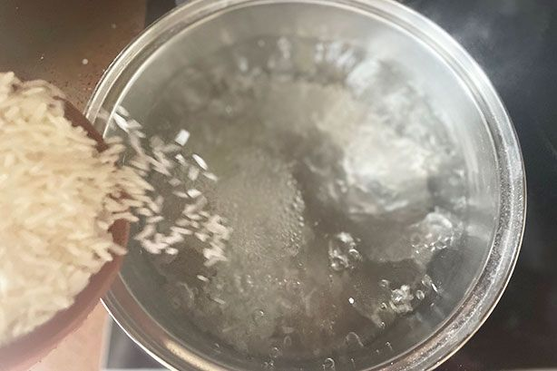
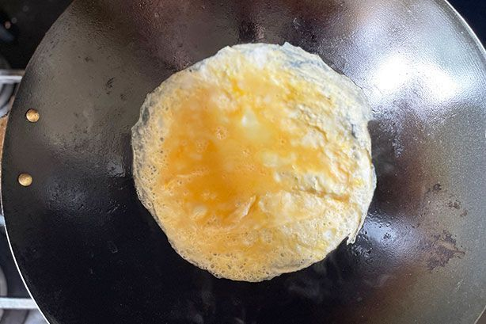

Easy fried rice
10m prep
30m cook
4 servings

10,395 people saved this
Fried rice is a staple of Aussie takeaway and while we all have our favourite restaurant that makes it just the way we like it, it's a dish that is easy to replicate at home. In this super simple version we use pantry and fridge staples, but the beauty of a basic fried rice recipe is that you can always adjust the ingredients based on what you happen to have on hand at any given time. This version keeps it simple which means that kids love it, making it a family-friendly dinner option. It's also a great way to use up leftover cooked rice from the night before. If you would like to make a Low FODMAP version of this fried rice, check out our diet tip in the Notes section.
10 Ingredients
- 1 cup Coles Long Grain White Rice
- 2 tsp vegatable oil
- 2 eggs, lightly whisked
- 2 bacon rashers, chopped
- 1 carrot, peeled and grated
- 2 shallors, trimmed, finely sliced
- 1/2 cup frozen peas, thawed
- 1 tbp soy sauce
- Sesame seeds, to serve
- Shallots, sliced, extra, to serve
Preparation
Step 1
Cook the rice in a large saucepan of boiling water for 12 minutes or until tender. Drain and leave to cool.
Step 2
Heat oil in non-stick wok or large frying pan over medium heat. Add eggs. Swirl over base to form an omelette. Cook for 2 minutes or until set. Transfer to a chopping board. Set aside to cool slightly. Roll up and thickly slice..
Step 3
Add bacon to wok. Cook 4 minutes until light golden. Add carrot. Stir fry 1 minute. Add shallots, peas and rice. Cook, stirring, 3-4 minutes. Add egg and soy sauce. Stir until heated through. Sprinkle with sesame seeds and top with extra shallots. Serve immediately.